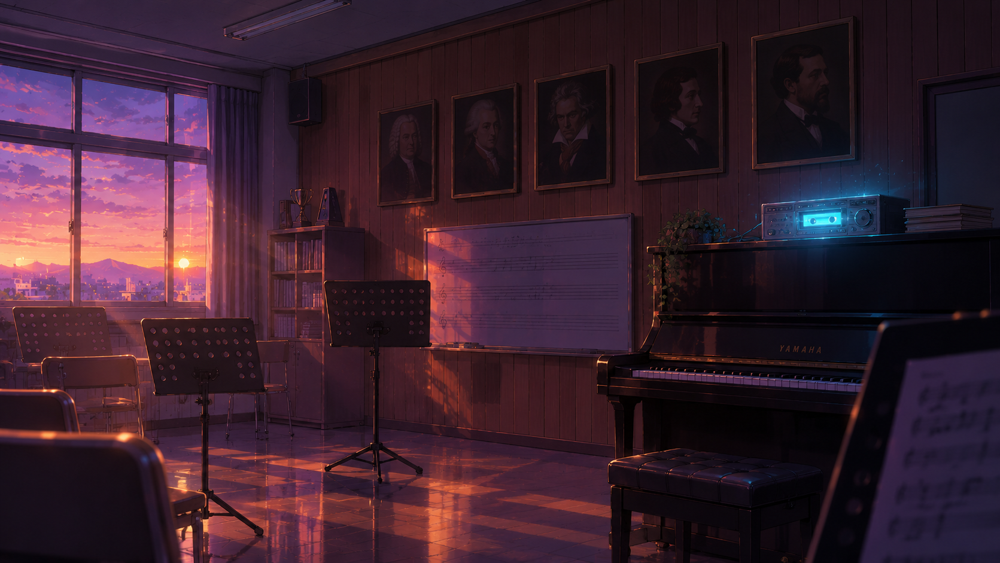
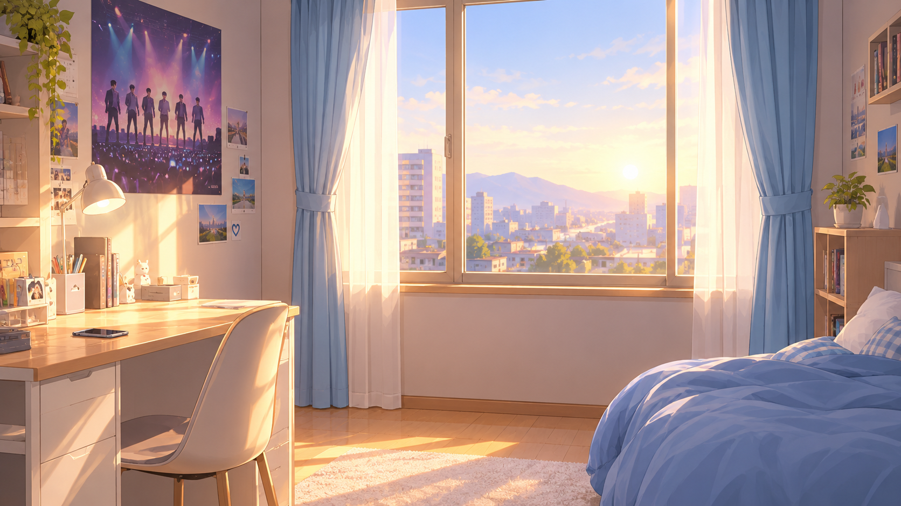
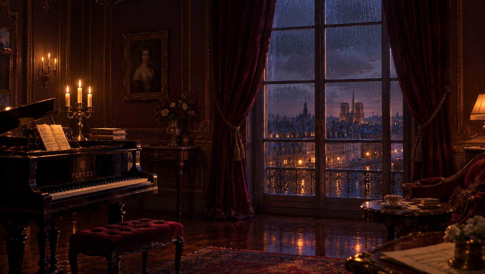
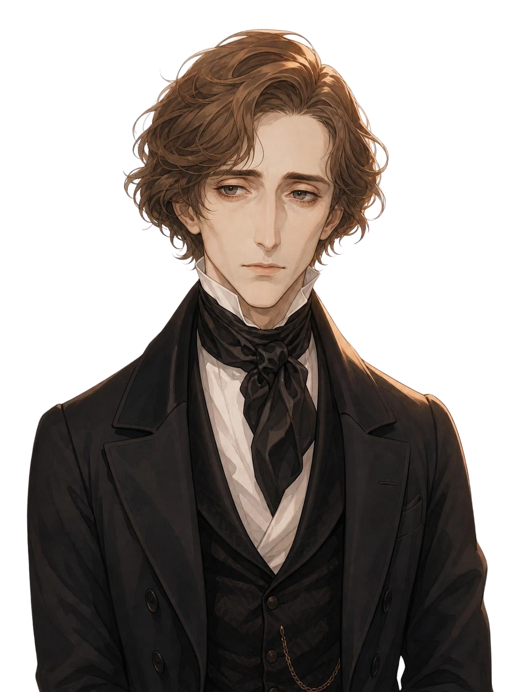
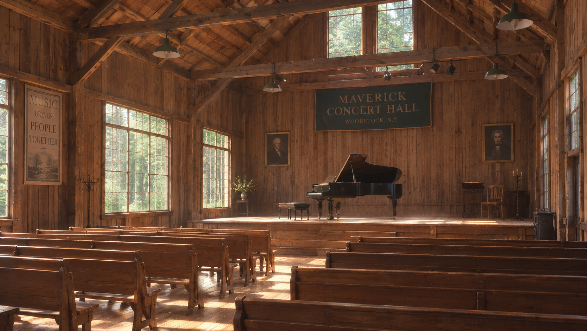

게임 전 수업 · 서양음악사 한눈에 보기
타임 하모니 — 시간 여행 준비
중세에서 현대까지, 900년의 음악 이야기.
다섯 시대와 다섯 작곡가를 미리 만나 봐요.

오늘의 질문
서양음악사 지도
시대 구분과 연도는 대략이에요. ◆ 표시는 게임에서 멈추는 해예요.
교회 중심. 한 선율의 성가를 부르고, 악보가 처음 생겼어요.
◆ 1150년경여러 성부가 어우러진 합창. 게임에는 나오지 않아요.
화려함과 대비. 오페라·협주곡이 생기고 대위법이 꽃피어요.
◆ 1717년균형과 명료함. 소나타 형식과 교향곡이 자리 잡아요.
◆ 1802년개인의 감정과 상상, 민족의 정서를 자유롭게 표현해요.
◆ 1847년조성과 형식의 틀을 깨고 ‘무엇이 음악인가’를 다시 물어요.
◆ 1952년Anno Domini MCL
Rupertsberg prope Bingen
제1장 · MEDIEVAL
단선율과 악보의 탄생
약 500년 ~ 1450년
중세 · 시대의 특징
게임에서 만나는 작곡가 ①
Hildegard von Bingen · 1098–1179 · 독일
12세기 말 · 독일 비스바덴 도서관 소장
힐데가르트의 노래가 줄 위의 네우마로 적혀 있어, 850년 가까이 지난 지금도 다시 부를 수 있어요.
수녀원장이자 작곡가·저술가. 자신이 본 환시를 노래로 지었어요. 게임 속 위기: 노래가 입에서 입으로만 전해져 사라질 위기!
❦ ❦ ❦
WEIMAR
im November, Anno MDCCXVII
제2장 · BAROQUE
질서와 대위법
1600년 ~ 1750년
바로크 · 시대의 특징
게임에서 만나는 작곡가 ②
Johann Sebastian Bach · 1685–1750 · 독일 · ‘음악의 아버지’
1717년 · 바이마르 궁정 문서
“11월 6일, 사직을 지나치게 고집한 탓에 구금실에 갇혔다. 12월 2일, 불명예 해고 통지와 함께 석방되었다.”
Heiligenstadt, den 6ten October 1802
Für meine Brüder Carl und Johann
제3장 · CLASSICAL
형식과 청각 장애 극복
1750년 ~ 1820년
고전 · 시대의 특징
게임에서 만나는 작곡가 ③
Ludwig van Beethoven · 1770–1827 · 독일 출생, 빈 활동
1802년 10월 6일 · 두 동생에게
“나를 붙잡은 것은 오직 예술뿐이었다.” 이 편지는 부쳐지지 않았고, 그가 세상을 떠난 뒤 발견되었어요.

Paris
— automne 1847 —
제4장 · ROMANTIC
감정과 피아노 시인
1820년 ~ 1900년
낭만 · 시대의 특징
쇼팽이 사랑한 피아노 곡의 종류

게임에서 만나는 작곡가 ④
Frédéric Chopin · 1810–1849 · 폴란드 출생, 파리 활동
1831년 9월 · 쇼팽의 일기장
바르샤바가 러시아군에게 함락되었다는 소식에 가족을 걱정하며 절망과 분노를 쏟아냈어요. 그의 심장은 훗날 바르샤바로 돌아갔어요.

MAVERICK CONCERT HALL
WOODSTOCK, N.Y. · FRIDAY, AUGUST 29, 1952
DAVID TUDOR, PIANO
제5장 · MODERN
고정관념을 깨는 새로운 시도
1900년 ~ 지금
현대 · 시대의 특징
게임에서 만나는 작곡가 ⑤
John Cage · 1912–1992 · 미국
우드스톡 매버릭 콘서트홀 · 피아노 데이비드 튜더
피아니스트는 4분 33초 동안 한 음도 치지 않았어요. 1악장엔 바람, 2악장엔 빗소리, 3악장엔 관객의 웅성거림이 들렸다고 해요.
직접 해 보기 · 4′33″ 맛보기
시작을 누르면 시간이 흘러요. 어떤 소리가 들리나요?
한눈에 정리
| 시대 | 대략의 연도 | 핵심 키워드 | 게임 속 작곡가 · 사건 | 대표곡 |
|---|---|---|---|---|
| 중세 | ~1450 | 그레고리오 성가, 단선율, 네우마 | 힐데가르트 — 노래를 악보로 남기기 (1150경) | 성가 모음 『심포니아』 |
| 바로크 | 1600~1750 | 대위법, 푸가, 하프시코드 | 바흐 — 바이마르에서 갇힘 (1717) | 『토카타와 푸가 d단조』 |
| 고전 | 1750~1820 | 소나타 형식, 교향곡, 피아노포르테 | 베토벤 — 청력을 잃어 가다 (1802) | 교향곡 5번 「운명」 |
| 낭만 | 1820~1900 | 감정, 민족주의, 피아노 소품 | 쇼팽 — 고향을 그리워하며 (1847) | 『혁명 에튀드』, 『강아지 왈츠』 |
| 현대 | 1900~ | 12음 기법, 우연성, 침묵 | 케이지 — 소리 없는 곡의 초연 (1952) | 『4′33″』 |
게임 미리 보기
그 시대와 작곡가의 성격에 맞는 말을 고르세요. 60을 넘기면 크리스탈을 얻어요.
짧은 음악을 듣고 악기·감정·특징을 맞혀요. 오늘 배운 내용이 그대로 나와요.
그 시대에 없던 물건을 권하면 역사가 뒤틀리고 에너지가 줄어요.
작곡가 카드와 사료를 모으고, 마지막에 수료증을 받아요.
출발 전 체크